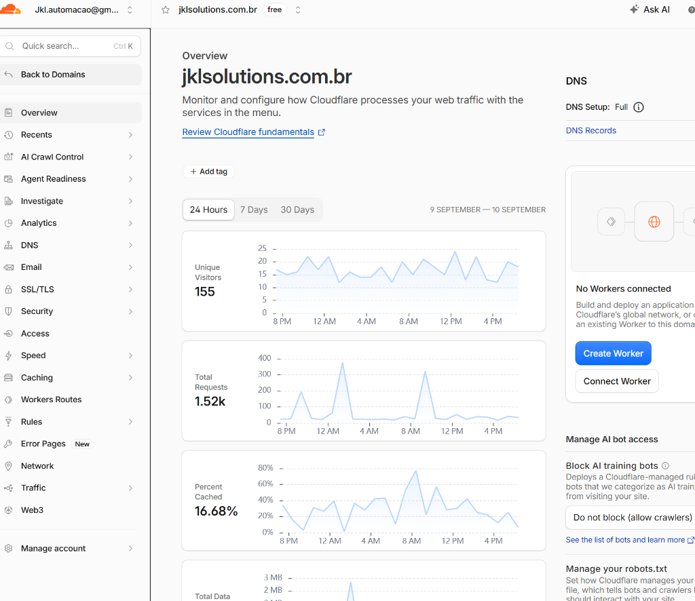
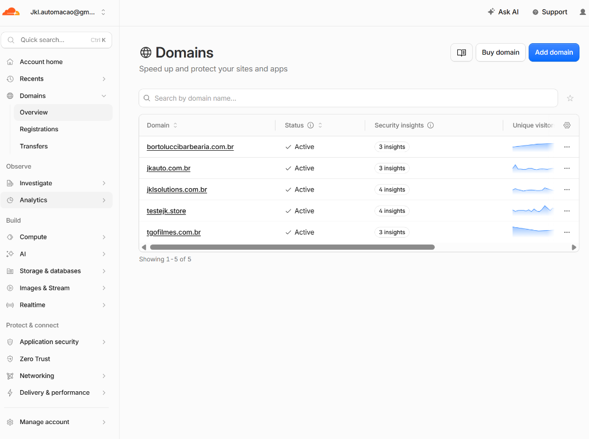
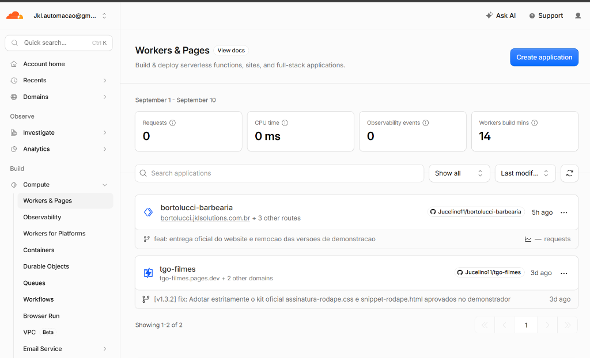
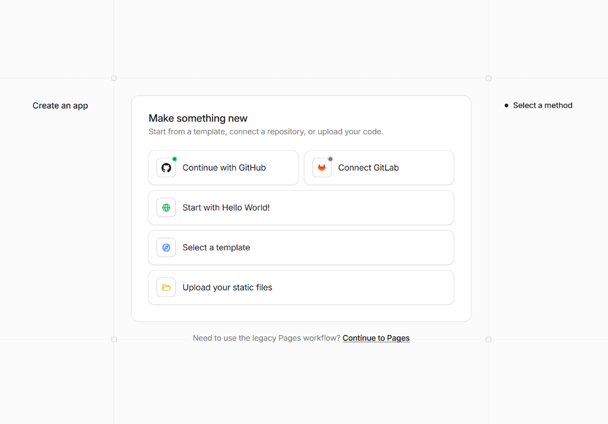
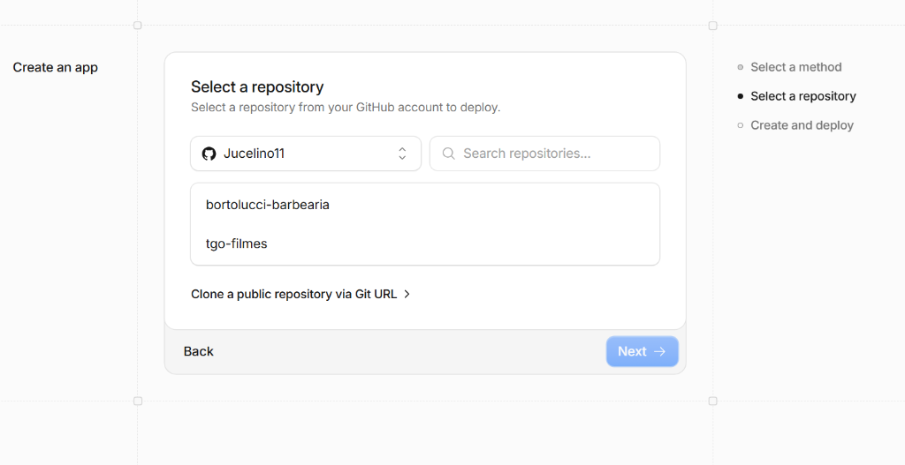
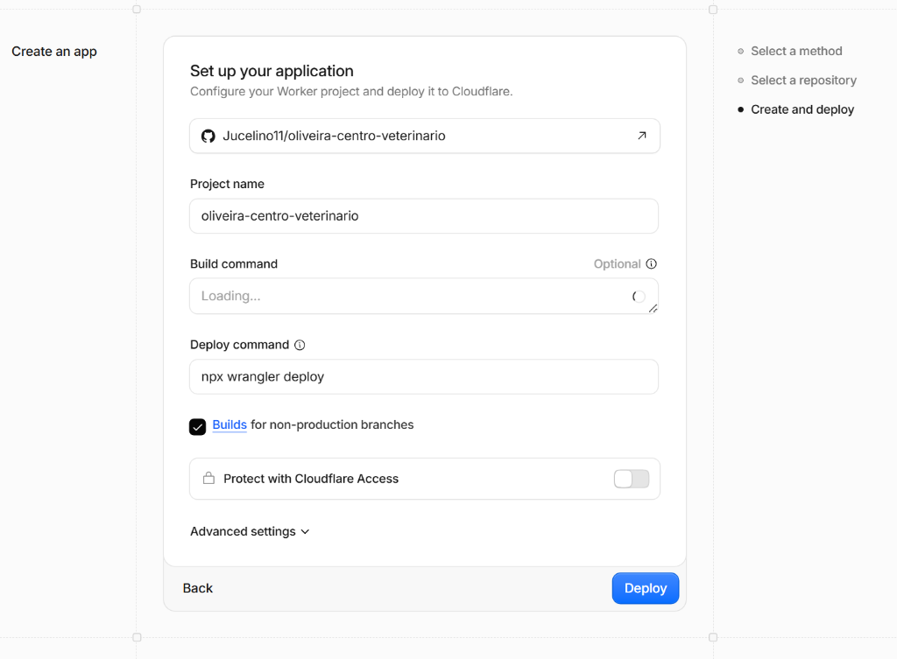
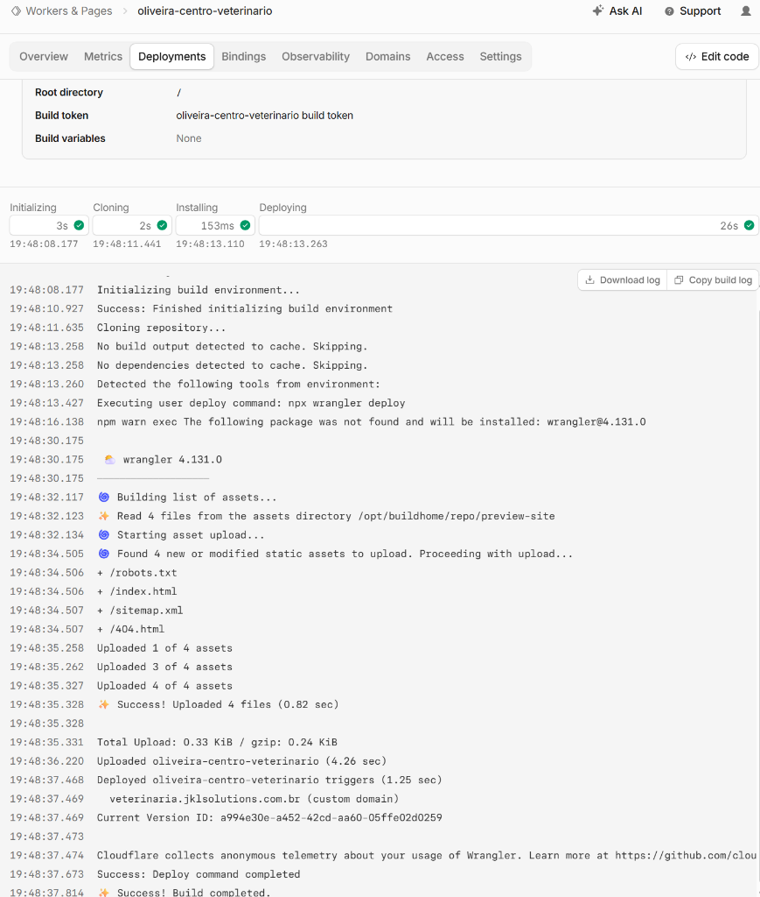

Objetivo do Procedimento
Este manual orienta o passo a passo definitivo para publicar qualquer novo site institucional de cliente em ambiente de homologação/teste da JKL Solutions (ex: nomedocliente.jklsolutions.com.br), utilizando o repositório GitHub e a infraestrutura gratuita de alta performance da Cloudflare.
Preparação dos Arquivos Locais & Subida no GitHub
Antes de abrir a Cloudflare, a estrutura do site do cliente é versionada e enviada para a conta GitHub oficial Jucelino11.
Para evitar o erro que ocorreu na Barbearia (onde o Google indexou o link temporário e demorou para reconhecer o oficial), todo site de homologação deve conter a blindagem tripla:
- Tag HTML: <meta name="robots" content="noindex, nofollow, noarchive">
- robots.txt: User-agent: * / Disallow: /
- _headers Cloudflare: X-Robots-Tag: noindex, nofollow
# Na pasta do projeto:
git init
git add .
git commit -m "feat: landing page cliente"
gh repo create oliveira-centro-veterinario --public --source=. --remote=origin --push
Acesso ao Painel e Caminho Correto do "Workers & Pages"
Atenção ao Caminho Atualizado da Cloudflare:
Se você estiver dentro da tela de um domínio individual, o menu Workers & Pages não aparece na barra lateral. Você deve voltar para o menu geral da conta.
Clique em "Back to Domains" no topo esquerdo para voltar ao nível geral da conta.

Procure o bloco Build ➔ clique em Compute ➔ Workers & Pages.

Criar Nova Aplicação (Sem Apagar Nada Antigo!)
Na tela de Workers & Pages, cada cliente tem o seu próprio projeto independente. Nunca apague nem renomeie projetos anteriores (como o bortolucci-barbearia), pois eles estão servindo os sites em produção.
Clique no botão azul no canto superior direito: "Create application".

Selecionar Método de Deploy (GitHub)
Na tela "Make something new", o seu GitHub já estará conectado (com o pontinho verde ✅). Basta clicar na primeira opção: "Continue with GitHub".

Selecionar o Repositório do Cliente
Na tela "Select a repository", procure pelo repositório do cliente recém-criado (ex: oliveira-centro-veterinario).
O que fazer se o repositório não aparecer na listinha de imediato?
- Opção A: Digite o nome do projeto (ex:
oliveira) no campo "Search repositories..."; - Opção B: Clique no dropdown Jucelino11 para selecionar o novo repositório e autorizar a Cloudflare;
- Opção C: Clique no link logo abaixo "Clone a public repository via Git URL >" e cole o link:
https://github.com/Jucelino11/oliveira-centro-veterinario.

Configuração dos Comandos (Set up your application)
Na tela de configuração, os dados já vêm pré-configurados pelo repositório:
- Project name: nome do projeto (ex:
oliveira-centro-veterinario); - Build command: em branco / opcional (pois é HTML estático, não precisa de compilação);
- Deploy command:
npx wrangler deploy;
Basta clicar no botão azul no canto inferior direito: "Deploy".

Sucesso! Subdomínio da JKL Ativo Automaticamente
Como o arquivo wrangler.toml já continha a rota configurada, a Cloudflare publica o site e vincula o Custom Domain da JKL Solutions em segundos, com certificado SSL gratuito automático:
